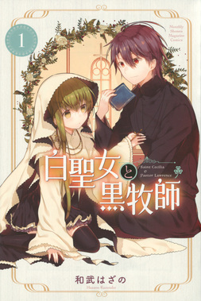
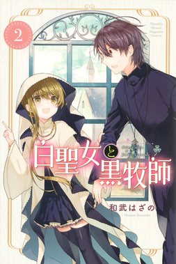
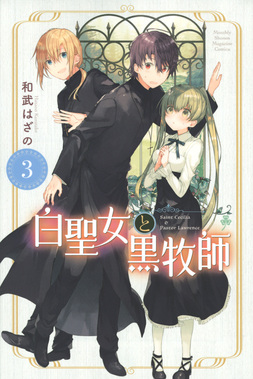
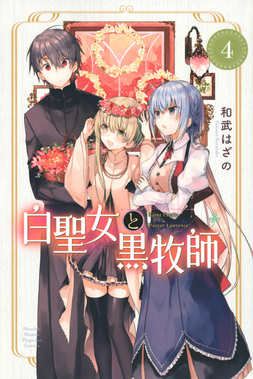
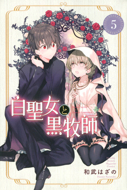
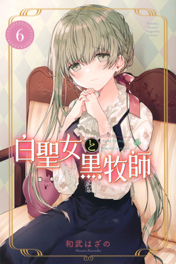
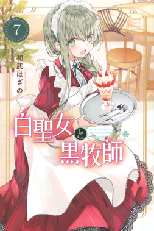
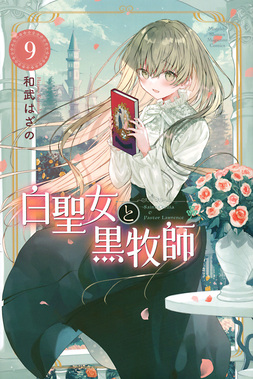
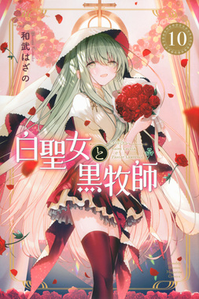
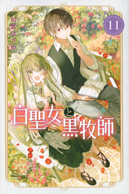
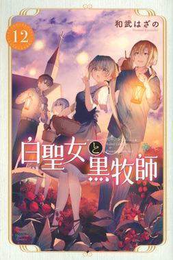
白聖女と黒牧師
作者:和武はざの
 七つの大罪
七つの大罪
あらすじ
異世界のとある教会。そこには人前ではちゃんとしていて可愛いけれど、牧師様と2人きりになるとだらけ癖のある聖女様と 真面目で聖女様には過保護で料理上手な牧師様が住んでいました。 穏やかな日々の中で密かに恋する聖女様と鈍感な牧師様が繰り広げる、 無自覚いちゃラブコメ。もどかしい二人の関係が行きつく先は果たして？ 牧師ローレンスの住む街にふらっとやって来た聖女セシリアはローレンスと同じ教会に同居しており、教会に訪れた人々を導く。 誰にでも敬語を使い、聖女として的確な説教が出来ることもあり、街の人々や子ども達からも慕われている物腰柔らかいセシリアだが、 実は猫かぶりでローレンスの前だけだとよくだらける。本人は雑務をする気はあるが生活能力皆無でローレンスに当てにされていない。 蜘蛛が苦手。スコーンが好き。何も無い所で転びそうになったりするなど、ドジを踏むことが多い。 田舎の教会を営む牧師。神学校を卒業し牧師となった。 真面目で丁寧だが天然な面もあり、自分への好意にはとてつもなく鈍感で、セシリアを好きだと自覚するまで非常に時間がかかった。 普段の一人称は「私」だが、アベルの前だと「俺」になる。セシリアからは「ローレン」と呼ばれている。
単行本 現13巻